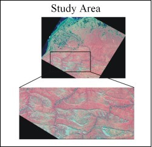
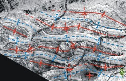

 The DeLong Mountains are located in northwestern Alaska, close to longitude 70 degrees North and longitude 164-160 degrees west. The area shows intense and interesting structural folding. It is typically Alpine in character with very short to practically no vegetation, making it an excellent site for remote sensing based geological studies.
For this study a Landsat Enhanced Thematic Mapper cloud free image from July 12, 2002 was used. The selected test site, falling north of the Delong mountain was investigated. The study area showed a series of folds that had their major axes trending parallel in near east-west direction. Their minor axes were also parallel to each other but perpendicular to the major axes. These minor folds cross cut the major fold axis which creates a bucking effect on the major folds, giving the resulting structures an elliptical shape.
 Landsat ETM data was ordered, imported and processed using Erdas Imagine version 8.5. Several color composites were generated and a principal component analysis was performed. The color composites were of high quality and interpretation was carried out using elements of visual interpretation and geological knowledge of the terrain. The image based structural interpretation was then compared with the field based maps of the area generated by the USGS. The two results gave very comparable results which demonstrated the power of using remote sensing as a geological interpretation tool.
The study would benefit by using data from other satellite sensors. Aster data could be particularly useful for lithological mapping and SAR data for structural mapping. A comparison with higher spatial resolution aerial photographs would also be useful. The analysis would also be better if good digital elevation data were used in conjunction. Field validation would further strengthen the study.